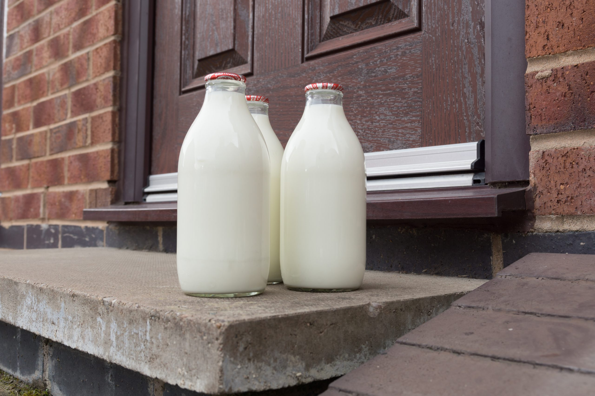
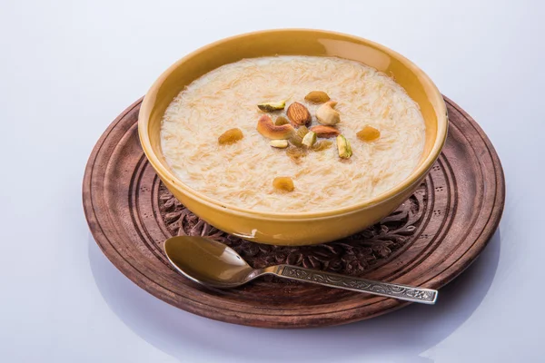

हामीलाई किन रोज्ने?
स्वच्छ दुहुने तथा प्रशोधन प्रक्रिया

स्वच्छ दुहुने तथा प्रशोधन प्रक्रिया

१००% प्राकृतिक र रसायनरहित

"हाम्रो परिवारबाट तपाईंको परिवारलाई सिधै शुद्ध ताजा प्राकृतिक दूध"
हामी १००% प्राकृतिक भैंसीको दूधका साथै परम्परागत विधिहरू प्रयोग गरेर तयार पारिएको र सावधानीपूर्वक डेलिभर गरिएको ताजा घरेलु दुग्ध उत्पादनहरू प्रदान गर्दछौं।
शुद्धता र ताजापनासँगै हाम्रो हरेक उत्पादन तपाईंको घरसम्म।
दैनिक संकलित ताजा दूध। कुनै पनि प्रकारको मिसावट वा संरक्षक पदार्थ बिना — पूर्ण रूपमा प्राकृतिक।
उच्च गुणस्तरको दूधबाट स्वच्छ रूपमा तयार गरिएको,परम्परागत विधिबाट तयार गरिएको सुगन्धित र पौष्टिक देशी घ्यू।
ताजा दूधबाट परम्परागत तरिकाले बनाइएको बाक्लो र स्वादिलो दही।
स्वच्छ दुहुने तथा प्रशोधन प्रक्रिया
दैनिक ताजापनदेखि विशेष अर्डरसम्म, हाम्रा सेवाहरूले सधैं मुस्कान ल्याउँछन्।

हरेक दिन ताजा दूध

आफ्नो सुविधा अनुसार, हप्ताभरि वा महिनाभरि ताजा दूध पाउनुहोस्।

पार्टी, पूजा वा कार्यक्रमका लागि पर्याप्त ताजा दूध र डेरी उत्पादन।
यो त दूध होइन, सुपर दूध हो! घ्यू र दही त घरको स्वाद झैं। मलाई त अब अरु डेरी चाहिँदैन।
नरेन्द्र डेरी एण्ड फार्मले हामीलाई देखायो कि शुद्धता र ताजापनको मतलब के हो। दूध, दही, घ्यू सबैमा पारिवारिक माया र परम्परा झल्किन्छ। यस्ता उत्पादनले सिधै तपाईंको टेबलसम्म स्वास्थ्य र विश्वास ल्याउँछ। मेरो अनुभवमा, यो डेरी एकदमै भरोसायोग्य छ।”